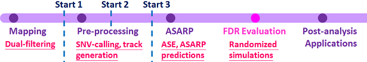
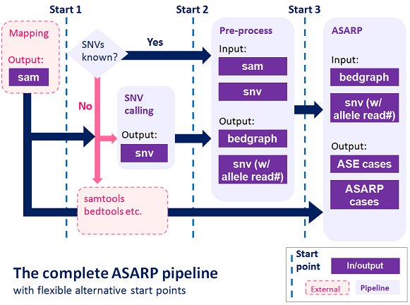

Overview
Heterozygous single nucleotide variants (SNVs) may exhibit allele-specific expression (ASE) as well as local allele-specific alternative mRNA processing (ASARP), including allele-specific alternative splicing (ASAS), alternative 5' transcriptional initiation (ASTI), alternative 3' termination/polyadenylation (ASAP).

The new ASARP pipeline to developed to discover ASE/ASARP genes/SNVs accurately and provide comprehensive analysis for ASARP with support to various RNA-Seq data. Starting from RNA-Seq mapping results, users can run the pipeline at different points given different input files they have. The overall flow of the pipeline is shown below.

Pipeline
The complete pipeline includes both pre-processing and ASARP prediction components with flexible post-mapping starts. Users can use the internal components to remove PCR duplicates, merge replicates and generate SNV statistics and bedgraph to input to the ASARP program. They can also use external tools such as samtools, bedtools and SNV-calling programs.

For details of the older version, refer to the paper: Li G, Bahn JH, Lee JH, Peng G, Chen Z, Nelson SF, Xiao X. Identification of allele-specific alternative mRNA processing via transcriptome sequencing, Nucleic Acids Research, 2012, 40(13), e104 at nar.oxfordjournals.org
Procedure
The alternative starts and the detailed procedure are described here.
Start 1: Mapping
Prior to any start points, RNA-Seq mapping results are needed, which will be utilized to provide allele-specific SNV statistics and expression levels. There are many RNA-Seq mapping tools and pipelines available. To generate accurate mapping with precise SNV statistics, splicing and variant aware programs in combination of unbiased mapping procedures are highly recommended. The results in the sam file format are used (more details: samtools.sourceforge.net ). Some choices are:
- BLAT: genome.ucsc.edu
- BOWTIE: bowtie-bio.sourceforge.net
- BOWTIE2: bowtie-bio.sourceforge.net
- Novoalign: www.novocraft.com
- BWA: bio-bwa.sourceforge.net
- Dual-filtering: a pipeline to combine multiple mappers to generate unbiased mapping, described in rnajournal.cshlp.org
With sam files from mapping, pre-processing generates the SNV statistics with allele read counts and the compress track information in bedgraph file format (details: genome.ucsc.edu ). If the genomic SNV information is available from DNA sequencing, the heterozygous SNVs can be directly used (see procReads). Otherwise, users need to do SNV-calling from RNA-Seq and overlap them with common Single Nucleotide Polymorphisms (SNPs). See below for more details.
Check out demo.sh in Demo.
For (heterozygous) SNV calling from DNA / genomic sequencing (beyond our scope), users may choose from:
- samtools: samtools.sourceforge.net
- SOAPsnv: soap.genomics.org.cn
- SNVer: snver.sourceforge.net
- GATK: www.broadinstitute.org
Start 2: SNV reads and bedgraphs
If there are no genomic SNVs available, users need to call SNVs from RNA-Seq. The pipeline provides components to check common SNPs (dbSNPs: www.ncbi.nlm.nih.gov ) for their allelic reads, remove monoallelic SNVs with flexible read count thresholds. Alternatively, users can use more advanced tools to perform RNA-Seq based SNV calling. Some choices are:
- samtools: samtools.sourceforge.net
- SNVMIX: compbio.bccrc.ca
To remove PCR duplicates and merge replicates, we provide self-contained pre-processing components rmDup and mergeSam. Users can also choose samtools rmdup for pre-processing. rmDup preserves unique pairs with splice junctions accurately for paired-end mapping results. Two pairs are consider different (not PCR duplicates) if any of the consecutive mapped regions are different.
To generate bedgraph files, users can either use procReads in this pipeline or bedtools. procReads generates both SNV statistics and bedgraph at the same time (i.e. combining both samtools and bedtools tasks). Note that "-split" should be used in bedtools coverage to get correct pipe-ups of splice junction reads (bedtools.readthedocs.org ).
- bedtools: bedtools.readthedocs.org
Start 3: ASARP
With both SNV read count and bedgraph files ready, the ASARP prediction component can be run directly. The details of ASARP are available in asarp.
See demo2.sh in Demo.
SEE ALSO
COPYRIGHT
This pipeline is free software; you can redistribute it and/or modify it given that the related works and authors are cited and acknowledged.
This program is distributed in the hope that it will be useful, but without any warranty; without even the implied warranty of merchantability or fitness for a particular purpose.
AUTHOR
Cyrus Tak-Ming CHAN
Xiao Lab, Department of Integrative Biology & Physiology, UCLA